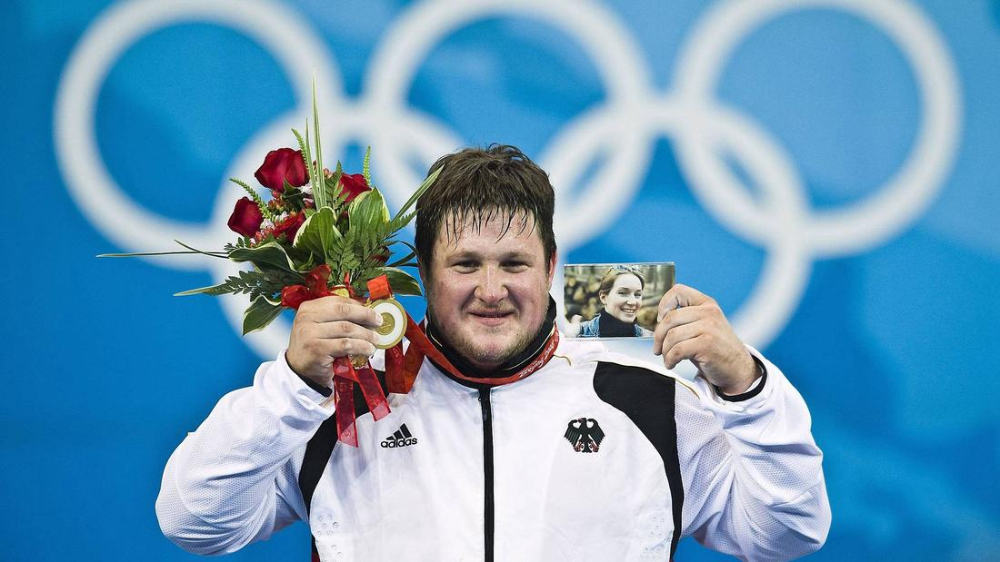

Драма атлета, который выиграл золото Олимпиады

«Я хотел, чтобы она вместе со мной все видела. И у меня было чувство, что она действительно видит: как я выиграл, как стою на самом верху пьедестала. Вот только смотреть на ее фотографию мне было тяжело и горько».